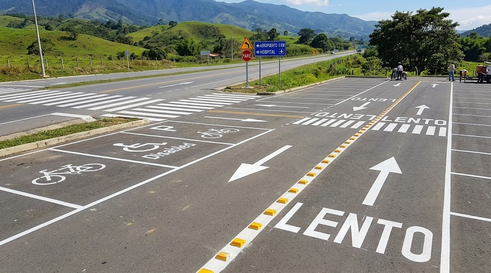
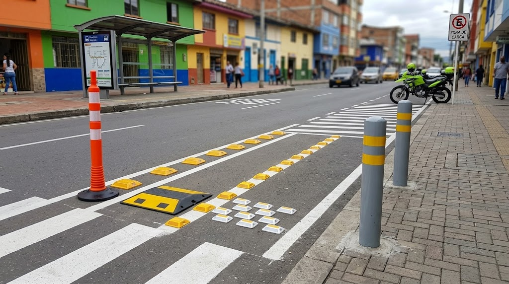
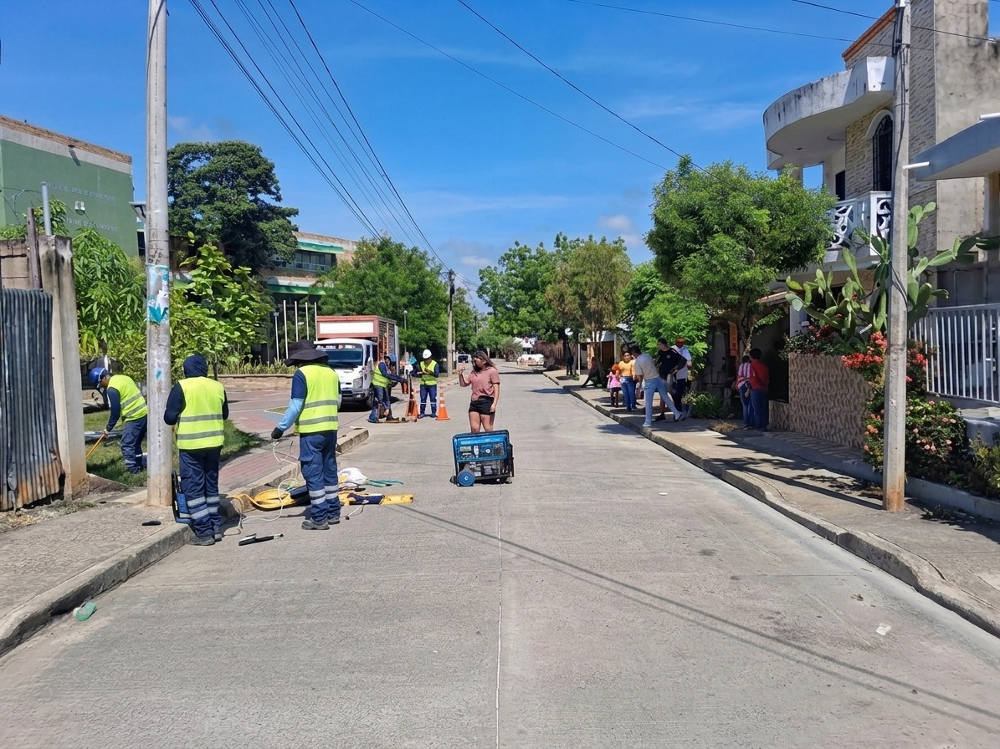
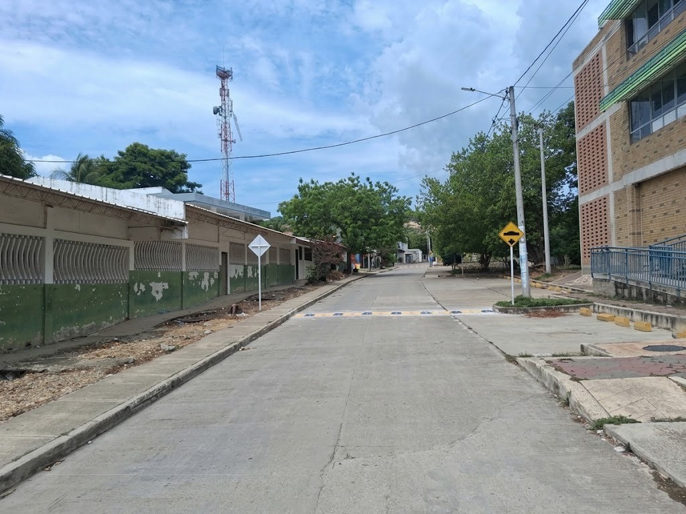
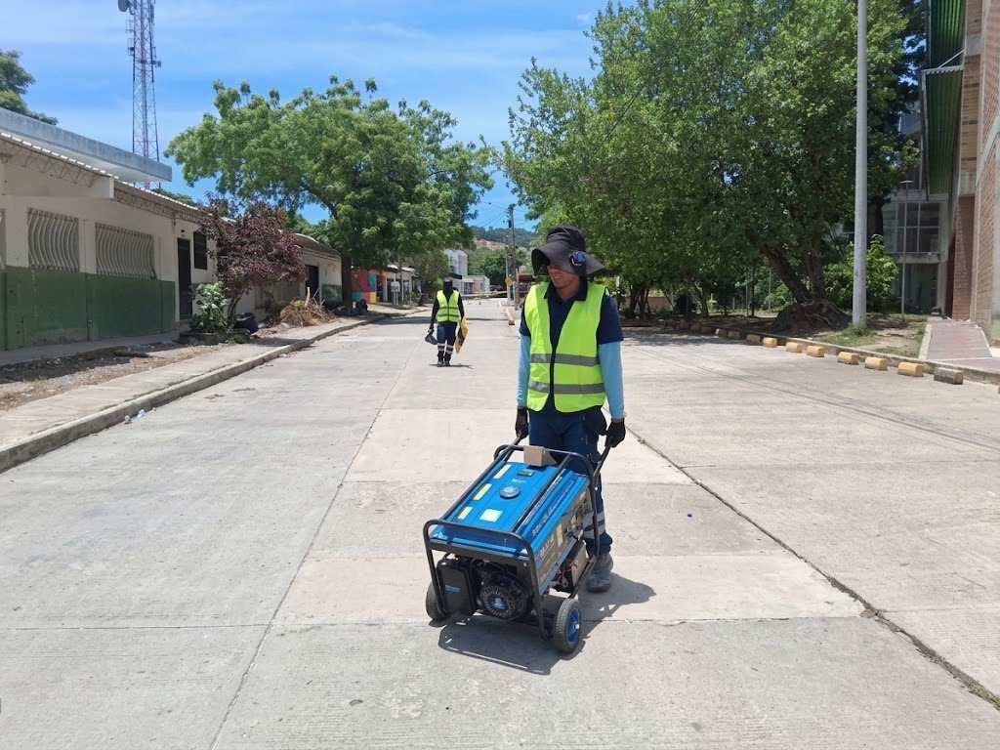

Estudios y consultoría
- Planes Estrat├®gicos de Seguridad Vial (PESV) ÔÇö Resoluci├│n 40595 de 2022
- Planes de Movilidad
- Estudios de Tránsito
- Planes de Manejo de Tránsito (PMT)
"Hacemos que la seguridad vial se entienda, se vea y se viva."
Estudios, dise├▒os, se├▒alizaci├│n, demarcaci├│n, implementaci├│n y obra para municipios, concesiones, contratistas y empresas privadas. Del diagn├│stico en campo a la se├▒al instalada.
Acompa├▒amos el ciclo completo: levantamos la informaci├│n en campo, hacemos el estudio, dise├▒amos la soluci├│n y la ejecutamos.


┬┐Necesita una soluci├│n vial para su proyecto?
Solicitar asesoríaTrabajo real en vías públicas y privadas: señalización, demarcación y mobiliario urbano.

Diseño, elaboración e instalación de señalización vertical y horizontal en vías públicas y privadas, según el Manual de Señalización Vial vigente.

Marcas viales en metros lineales, metros cuadrados y pictogramas: líneas, cebras, flechas y logos viales en pintura en frío o termoplástico.

Paraderos, resaltos, estoperoles plásticos, hitos y dispositivos de seguridad vial incluidos en el Manual de Señalización Vial vigente.
Resoluci├│n 40595 de 2022 y Manual de Se├▒alizaci├│n Vial vigente.
AutoCAD, QGIS, Revit BIM, SketchUp y georreferenciaci├│n.
Personal propio en intervenciones de se├▒alizaci├│n y obra vial.
Del estudio y dise├▒o a la instalaci├│n y la obra civil.
Documentos t├®cnicos que sustentan decisiones, cumplen la norma y se pueden implementar. Cada entrega queda lista para radicar ante la autoridad competente.
Formulación e implementación del PESV con la metodología vigente, ajustada al nivel de su organización. Acompañamiento para la verificación.
Señalización temporal, desvíos y control de obra para intervenir la vía sin paralizar la ciudad. Planos, memorias y cronograma.
Aforos vehiculares y peatonales, capacidad y nivel de servicio. La base t├®cnica para sustentar un proyecto o una decisi├│n de inversi├│n.
Diagnóstico y propuestas para ordenar el tránsito de un municipio, zona industrial o centro logístico, con priorización de intervenciones.
Levantamiento en campo del estado de la señalización, con ubicación geográfica, registro fotográfico y necesidades priorizadas.
Fabricamos e instalamos según el Manual de Señalización Vial vigente, en vías públicas, privadas e interiores de empresa.

Preventivas, reglamentarias e informativas en lámina calibre con película retrorreflectiva, con su poste y anclaje.
Líneas, flechas, cebras, tachas y logos viales en pintura en frío o termoplástico, en vías y parqueaderos.

Delineadores, reductores de velocidad, estoperoles, tachas, bolardos y paraderos, instalados seg├║n norma.
Elige las señales que necesitas, ajusta la cantidad y envía tu cotización por WhatsApp en un solo paso.


No encontramos se├▒ales con ese nombre en esta categor├¡a. Cu├®ntanos qu├® necesitas y lo cotizamos.
Fabricamos se├▒ales a medida y atendemos proyectos de mayor tama├▒o. Cu├®ntanos la referencia o la situaci├│n de la v├¡a.
Consultar por WhatsAppFotografías de nuestras intervenciones: el compromiso humano detrás de cada proyecto de seguridad vial.





Un proyecto de seguridad vial no empieza con la se├▒al, empieza con el dato.
Visita, inventario y revisión del estado actual de la vía o de la organización.
Documento t├®cnico y planos con la soluci├│n, las cantidades y el presupuesto.
Fabricaci├│n, instalaci├│n y obra civil complementaria con personal propio.
Seguimiento, actualización del inventario y ajustes cuando la vía cambia.
En MOVIAL SVA somos especialistas en seguridad vial y soluciones viales. Cumplimos con el Manual de Señalización Vial y las normativas de tránsito colombianas para garantizar que cada proyecto cumpla con los estándares de calidad y seguridad requeridos.
Nuestro compromiso es proporcionar soluciones t├®cnicas que protejan la vida de todos los usuarios de la v├¡a.
Proyectos ajustados al Manual de Se├▒alizaci├│n Vial y Resoluci├│n 40595 de 2022.
Del diagn├│stico en campo a la implementaci├│n, con herramientas de dise├▒o y georreferenciaci├│n.
Cada comunidad y cada entorno vial tiene su propia soluci├│n, no una plantilla.
Diseñamos pensando en quien camina, pedalea, conduce y trabaja en la vía.
Seguridad vial con cumplimiento normativo.
MOVIAL SVA ÔÇö Soluciones Viales y Arquitectura
Raz├│n social y NIT: Pendiente de confirmar por el cliente
En cumplimiento de la Ley 1581 de 2012 y el Decreto 1377 de 2012, le informamos que los datos personales recopilados a trav├®s de este formulario ser├ín tratados de manera confidencial y segura, siendo utilizados ├║nicamente para:
Sus datos no ser├ín compartidos con terceros sin su autorizaci├│n expresa. Para ejercer sus derechos de acceso, rectificaci├│n, supresi├│n o revocaci├│n, puede contactarnos a trav├®s de nuestro WhatsApp o correo electr├│nico.
Nota: Este texto es una proforma sujeto a la entrega de la Raz├│n Social y NIT exactos de la empresa por parte del cliente.
Entendido